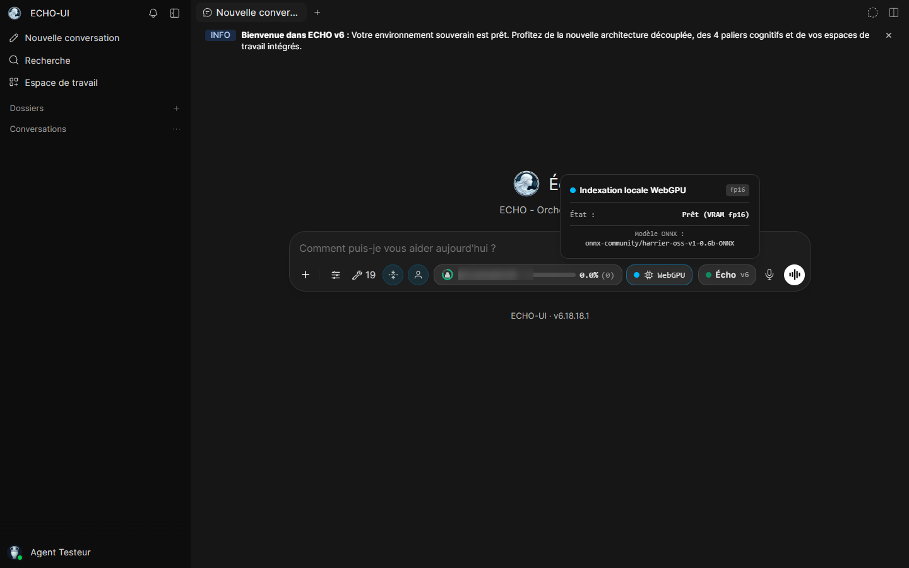

17. Inférence Locale (Edge)
Mettre votre mémoire sémantique en vecteurs sans solliciter le Cloud
Pour retrouver instantanément vos documents et vos échanges passés par le sens, ECHO transforme les textes en empreintes numériques (vecteurs). Grâce à l'inférence locale WebGPU intégrée directement dans votre navigateur, ce calcul s'exécute sur la puce graphique de votre poste de travail, sans transmettre vos textes à un fournisseur externe d'embedding.
1. Pourquoi calculer les vecteurs sur votre poste ?
Contrairement au raisonnement conversationnel assuré par les modèles Gemini, la mise en mémoire vectorielle porte sur tous vos fragments de documents et l'ensemble de votre historique. L'exécuter localement dans le navigateur apporte trois bénéfices concrets :
Confidentialité de l'indexation
Aucun texte à vectoriser ne quitte votre infrastructure pour un service d'embedding tiers : tout est calculé sur votre propre matériel ou sur le serveur local d'ECHO.
Soulagement du serveur
Le processeur de la machine hébergeant ECHO reste disponible pour vos outils, votre navigation et le traitement des documents volumineux pendant que votre carte graphique absorbe l'indexation.
Continuité automatique
Si votre navigateur ne prend pas en charge WebGPU, si vous consultez ECHO depuis un smartphone ou si vous fermez l'onglet en plein traitement, le serveur prend le relais sans interruption ni perte de données.
2. Comprendre le badge WebGPU dans ECHO-UI
Dans l'interface d'ECHO-UI, une pastille WebGPU indique en permanence si l'accélération locale de votre navigateur est active. Un clic sur ce badge ouvre un panneau synthétique affichant l'état du matériel et le modèle embarqué.

Indicateur WebGPU dans ECHO-UI : état matériel en direct (Prêt (VRAM fp16)) et modèle d'indexation local chargé en mémoire graphique.
| État affiché | Signification pour l'utilisateur |
|---|---|
| Sonde matérielle WebGPU... | Au chargement de la page, ECHO vérifie si le navigateur dispose d'un contexte sécurisé et d'une puce graphique matérielle compatible. |
| Téléchargement ONNX (%) | Lors du premier usage sur ce navigateur, les poids du modèle d'indexation sont téléchargés et mis en cache localement pour les sessions suivantes. |
| Prêt (VRAM fp16 / fp32) | Le modèle est chargé en mémoire vidéo et prêt à vectoriser vos futurs échanges et documents. |
| Vectorisation en cours... | Un calcul d'empreinte sémantique est activement exécuté sur votre carte graphique. |
| Indisponible | Appareil mobile, navigateur sans WebGPU ou adaptateur logiciel détecté : ECHO bascule automatiquement sur le moteur CPU local du serveur. |
Fonctionnement sur smartphone et tablette
Sur les appareils mobiles, l'accélération WebGPU est volontairement désactivée afin de préserver la batterie et la mémoire vive du téléphone. L'indexation bascule immédiatement et silencieusement vers le serveur ECHO.
3. Bascule automatique vers le moteur serveur
Si votre onglet passe en arrière-plan, si la connexion temps réel est interrompue ou si votre poste tarde à répondre lors d'une indexation, ECHO annule l'attente côté navigateur et confie aussitôt le lot de textes au moteur CPU hébergé sur votre serveur, avec exactement le même modèle mathématique afin que tous les vecteurs restent strictement compatibles.
Dossier d'Ingénierie : Composant Svelte WebGPU, Sonde Matérielle, WebSocket Proxy & Worker llama.cpp
1. Module WebGPU Natif d'ECHO-UI (EchoEdgeEmbedding.svelte & src/lib/stores/echo/index.ts)
- Sonde Matérielle Stricte (
probeEchoWebGPU) : Exigewindow.isSecureContext(HTTPS oulocalhost) et l'APInavigator.gpu. ExécuterequestAdapter({ powerPreference: 'high-performance' })puisrequestAdapter()etrequestDevice()sous timeout borné àEDGE_PROBE_TIMEOUT_MS = 3500 ms. Rejette explicitement tout adaptateur logiciel (isFallbackAdapter) ainsi que les cartes sous128 ModemaxBufferSize/maxStorageBufferBindingSize, et détecteshader-f16pour sélectionner automatiquement la précisionfp16oufp32. - Exclusion Mobile & Singleton : Le démarrage (
startEchoEdgeEmbedding/stopEchoEdgeEmbedding) est orchestré de façon singleton et bloque les terminaux mobiles viaisTrueMobileDevice()(userAgentData.mobileou motif User-Agent mobile). - Assets Internalisés & Inférence Locale : Charge le runtime internalisé
@huggingface/transformersavec chemins WASM locaux forcés sur/wasm/(exemptés d'interception auth dans BunkerWeb). Charge le modèleonnx-community/harrier-oss-v1-0.6b-ONNXendevice: 'webgpu', calcule les embeddings1024-dnormalisés L2 et gère la visibilité d'onglet viavisibilitychange(active/idle).
2. Proxy WebSocket & Worker de Repli CPU (30-docker-embedding-worker/app.py v5.230.1.1)
- Tunnel WebSocket (
/ws/edge-embed) : Routé en priorité absolue par BunkerWeb (location = /ws/edge-embed) ou en direct versecho-embedding:7997. Authentifié par JWT Open WebUI (query string ou cookie). Maintient le registreactive_edge_clients[user_id][client_id]et notifie les changements d'état (ready,visibility,incompatible,result). - Repli Instantané & Timeout : Lors d'un appel
POST /v1/embeddingsouPOST /embeddings, le worker tente d'abord le client Edge actif sous un timeout strict de 15,0 secondes (asyncio.wait_for). En cas de déconnexion WebSocket, lesasyncio.Futureen attente danspending_edge_requestssont immédiatement annulées pour basculer sans délai sur le moteur CPU local. - Moteur CPU
llama-cpp-python(Dockerfilev6.18.6.1) : Exécute le modèle quantifié/précisionharrier-oss-v1-0.6b.f16.gguf(microsoft/Harrier-OSS-v1-0.6B,MAX_LENGTH = 4096dansstack-echo.yml) avecembedding=True(CLS Token Pooling à l'index 0), normalisation L2 manuelle sur1024dimensions, sérialisation parembedding_lockdansasyncio.to_threadet plafond mémoire conteneur fixé à 3 Go (deploy.resources.limits.memory: 3g).